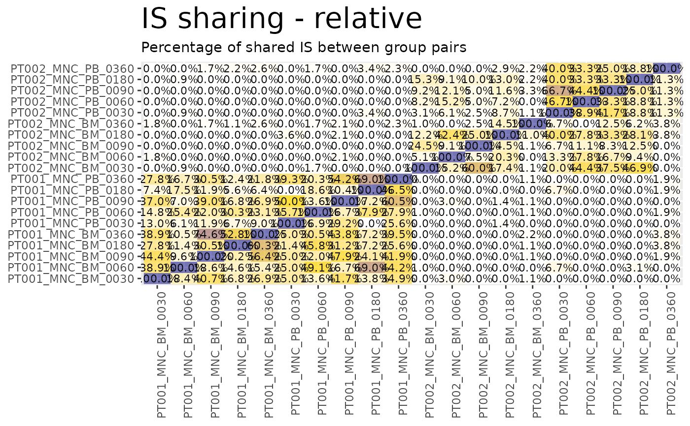
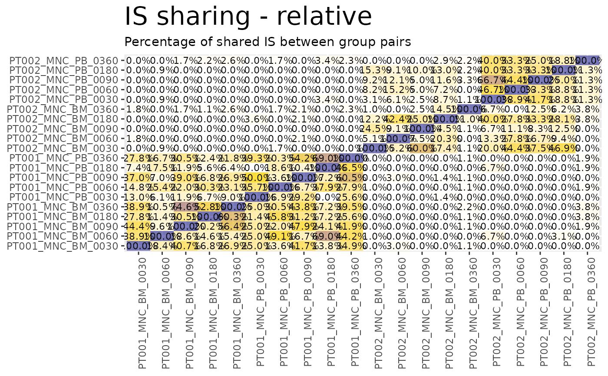

![[Stable]](figures/lifecycle-stable.svg) Displays the IS sharing calculated via is_sharing as heatmaps.
Displays the IS sharing calculated via is_sharing as heatmaps.
Usage
sharing_heatmap(
sharing_df,
show_on_x = "g1",
show_on_y = "g2",
absolute_sharing_col = "shared",
title_annot = NULL,
plot_relative_sharing = TRUE,
rel_sharing_col = c("on_g1", "on_union"),
show_perc_symbol_rel = TRUE,
interactive = FALSE
)Arguments
- sharing_df
The data frame containing the IS sharing data
- show_on_x
Name of the column to plot on the x axis
- show_on_y
Name of the column to plot on the y axis
- absolute_sharing_col
Name of the column that contains the absolute values of IS sharing
- title_annot
Additional text to display in the title
- plot_relative_sharing
Logical. Compute heatmaps also for relative sharing?
- rel_sharing_col
Names of the columns to consider as relative sharing. The function is going to plot one heatmap per column in this argument.
- show_perc_symbol_rel
Logical. Only relevant if
plot_relative_sharingis set to TRUE, should the percentage symbol be displayed in relative heatmaps?- interactive
Logical. Requires the package plotly is required for this functionality. Returns the heatmaps as interactive HTML widgets.
See also
Other Plotting functions:
CIS_volcano_plot(),
HSC_population_plot(),
circos_genomic_density(),
fisher_scatterplot(),
integration_alluvial_plot(),
sharing_venn(),
top_abund_tableGrob()
Examples
data("integration_matrices", package = "ISAnalytics")
data("association_file", package = "ISAnalytics")
aggreg <- aggregate_values_by_key(
x = integration_matrices,
association_file = association_file,
value_cols = c("seqCount", "fragmentEstimate")
)
sharing <- is_sharing(aggreg,
minimal = FALSE,
include_self_comp = TRUE
)
#> Calculating combinations...
#> Calculating self groups (requested)...
#> Calculating permutations (requested)...
#> Done!
sharing_heatmaps <- sharing_heatmap(sharing_df = sharing)
sharing_heatmaps$absolute
 sharing_heatmaps$on_g1

sharing_heatmaps$on_union
sharing_heatmaps$on_g1

sharing_heatmaps$on_union